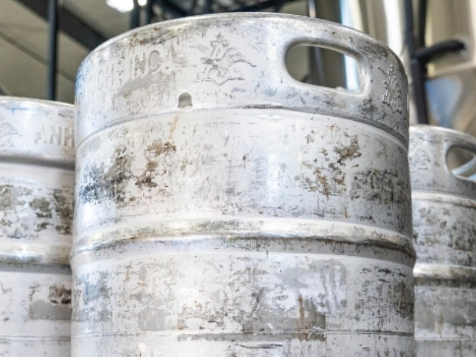
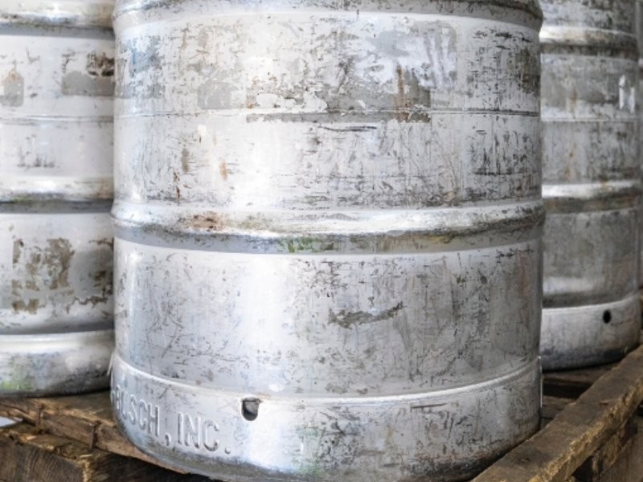
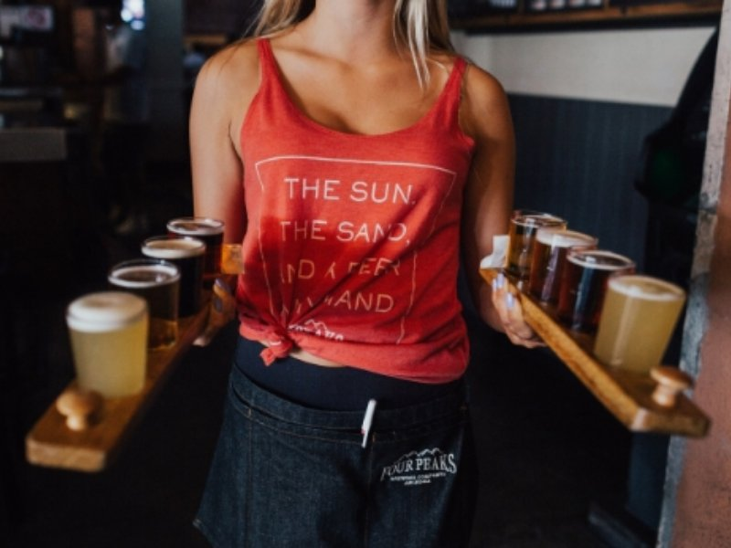

Refroidisseurs de bière
Des refroidisseurs compacts et puissants pour cafés, restaurants et tirage à domicile.
En savoir plusGolderos Benelux distribue les refroidisseurs professionnels, refroidisseurs de fûts et composants frigorifiques de Golderos — depuis plus de 55 ans LE spécialiste du refroidissement des boissons pour l'horeca. Vente, installation, entretien et réparation, depuis la Belgique pour tout le Benelux.
Le savoir-faire espagnol d'origine, avec plusieurs brevets dans le refroidissement industriel des boissons.
Refroidisseurs et composants en stock en Belgique : délais courts pour tout le Benelux.
Entretien et réparation de refroidisseurs et moteurs agitateurs — y compris d'autres marques.
Du café au festival : nous calculons la capacité de froid adaptée à votre installation de tirage.
Du refroidisseur compact pour le café du coin aux puissants refroidisseurs événementiels pour festivals — toujours avec la technologie éprouvée de Golderos.
Des refroidisseurs compacts et puissants pour cafés, restaurants et tirage à domicile.
En savoir plus
Refroidissez le fût lui-même, pour une température constante de la première à la dernière pinte.
En savoir plus
Des refroidisseurs déplaçables entièrement équipés — il suffit de brancher et de tirer.
En savoir plus
Une grande capacité de tirage pour foires, festivals et grands événements.
En savoir plusCe qui a commencé en 1970 comme un atelier de réparation de refroidisseurs à Madrid est devenu l'un des plus grands spécialistes espagnols du refroidissement industriel des boissons pour l'horeca. Depuis des décennies, Golderos développe, fabrique et brevette la technologie qui permet aux plus grandes brasseries de servir leur bière parfaitement fraîche à la pression.
En tant que distributeur officiel, Golderos Benelux apporte cette expertise en Belgique, aux Pays-Bas et au Luxembourg — avec un stock local, un service rapide et des conseils dans votre langue.

Placement et raccordement professionnels de votre refroidisseur, python et colonnes — livré prêt à tirer.
Plus d'infosEntretien préventif et réparations rapides de refroidisseurs et moteurs agitateurs, y compris d'autres marques.
Plus d'infosConceptions exclusives et projets sur mesure, directement depuis l'atelier Golderos.
Plus d'infosDemandez un conseil ou un devis sans engagement — nous vous aidons à choisir la bonne solution de froid.